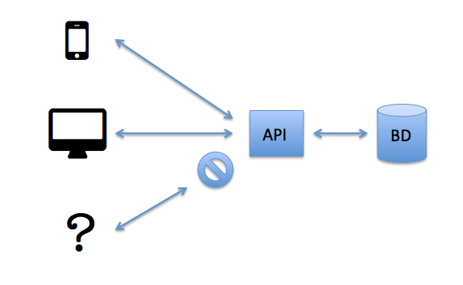
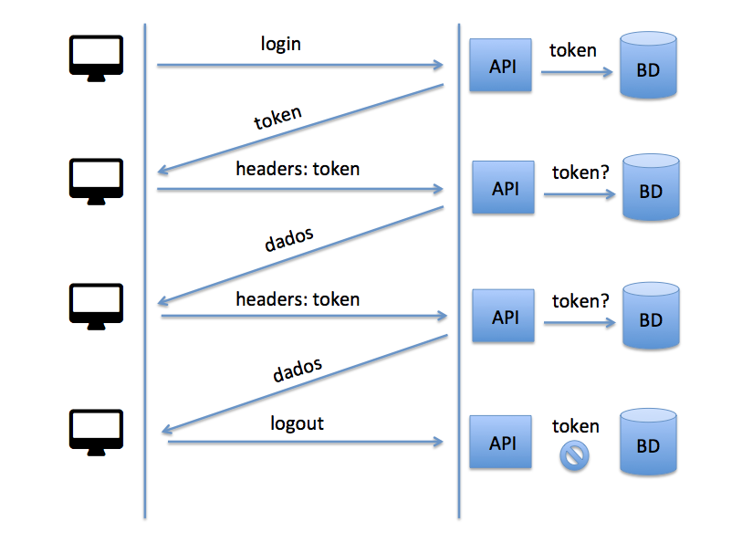

JSON WEB TOKEN
Para autenticação entre duas entidades
Hugo Koji Tamaki
Analista de Sistemas
- Ruby
- Ruby on Rails
- JavaScript
- Ionic
Por que autenticação é importante?
- Não permite acesso aberto do sistema a qualquer um
- Permite identificar que você é você
- Permite acessar o sistema apenas estando logado
APIs e outros serviços

Autenticação token salvo em BD
